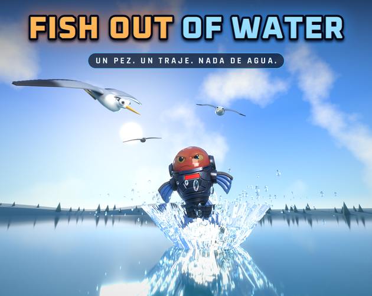
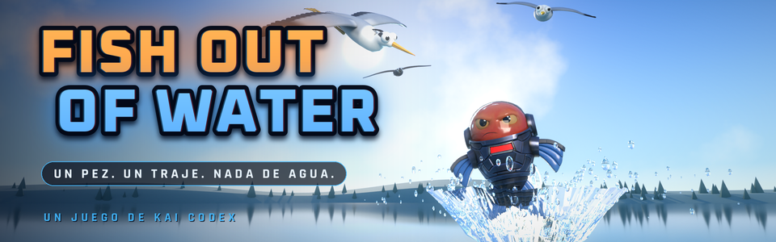
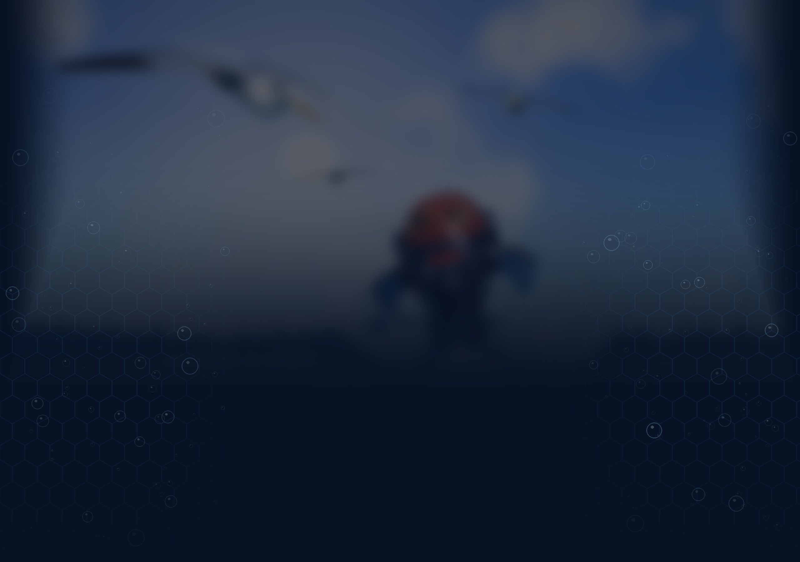
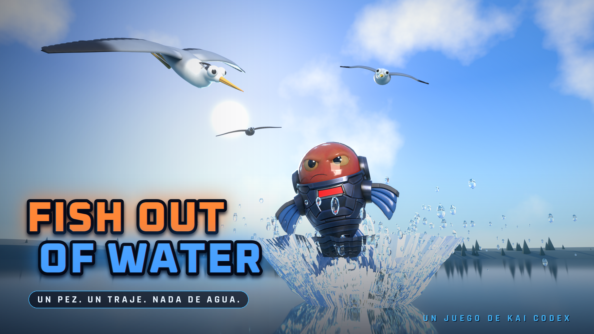
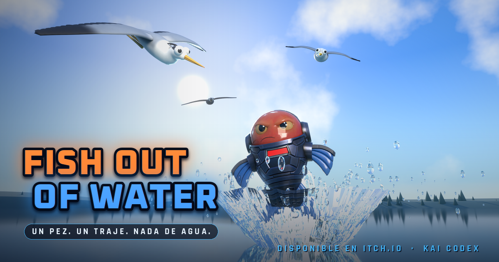
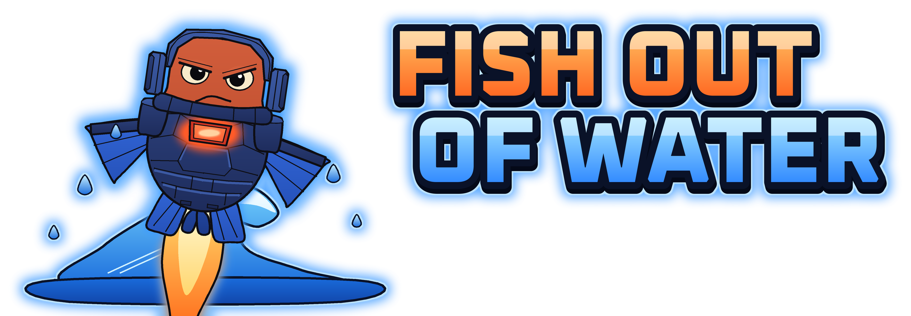

Fish Out Of Water en itch.io
Paso a paso para dejar la página lista y subir el juego. Abre itch.io en otra ventana, sigue los pasos en orden y usa los botones Copiar para pegar cada dato. Marca cada paso al terminarlo: tu avance se guarda en este navegador.
0Qué descargar
Una sola vez. Lo que ya tengas, sáltalo.
- Este kit (ya lo tienes): esta guía, la descripción y todas las imágenes de la página. Descomprímelo en una
carpeta fija, por ejemplo
Documentos\FishOutOfWater_itch. - Los últimos cambios del juego: en la carpeta del proyecto, trae la rama
PEscadoRama(con GitHub Desktop: Fetch origin → Pull; o en la terminal):git checkout PEscadoRama git pull
- Unity 6 versión
6000.3.1f1(la del proyecto) desde Unity Hub: unity.com/download. En Windows, el editor ya trae lo necesario para armar el juego para Windows. (Si usas Mac, agrega el módulo Windows Build Support (Mono).) - Una cuenta de itch.io: itch.io/register.
- Opcional, para las actualizaciones: butler, la herramienta de itch.io para subir versiones nuevas sin hacer el .zip: itchio.itch.io/butler (ver el paso 8).
1Cooperativo en línea (Unity Cloud)
Una sola vez. Si lo saltas, el juego funciona igual y el cooperativo en red local también; solo CREAR SALA EN LÍNEA avisará que falta esto.
- Abre el proyecto en Unity y ve a Edit → Project Settings → Services. Debe decir que está
vinculado al proyecto
Fish Out of Water. Si no, vincúlalo ahí con tu cuenta de Unity. - Entra a cloud.unity.com con la misma cuenta y abre el proyecto Fish Out of Water.
- Busca Lobby y actívalo. Haz lo mismo con Relay. Los dos son gratis hasta un límite amplio.
2Armar el ejecutable en Unity
Esto solo se puede hacer en tu computadora, con Unity.
- Abre el proyecto en Unity
6000.3.1f1y espera a que termine de importar (la primera vez tarda). - Edit → Project Settings → Player: revisa que Product Name sea
Fish Out of Watery Version0.1.0. El ícono ya está puesto (el pez 3D). - File → Build Profiles → elige Windows. Si no es la plataforma activa, toca Switch Platform y espera.
- En Scene List deben estar marcadas, en este orden:
MainMenu,SampleScene,Taller. - Toca Build y elige una carpeta nueva y vacía fuera de
Assets, por ejemploBuilds\FishOutOfWater_Windowsdentro del proyecto. Espera a que termine. - Prueba el juego desde esa carpeta (
Fish Out of Water.exe): el menú, una partida, el Taller y crear una sala cooperativa. - La primera build pinta el terreno del lago y deja modificados los archivos
TerrainData_*.assetyNew Terrain 1.asset. Súbelos al repositorio (commit y push) para no repetirlo. - Si dentro de la carpeta aparece
..._BurstDebugInformation_DoNotShip, bórrala (no se publica). - Comprime la carpeta: clic derecho sobre
FishOutOfWater_Windows→ Comprimir en archivo ZIP (Windows 10: Enviar a → Carpeta comprimida). Ponle de nombre:FishOutOfWater_Windows_v0.1.0.zip
3Crear el proyecto en itch.io
En itch.io: Dashboard → Create new project. Llena los campos así (los nombres están en inglés, como en itch.io).
FishOutOfWater_Windows_v0.1.0.zip.
Cuando termine de subir, marca la casilla Windows junto al archivo.Escribe o pega una por una (máximo 10):
Cover image (a la derecha del formulario): sube portada_630x500.png.
Screenshots: tus capturas (paso 6; puedes volver después).

Abajo de todo: Save & view page.
4Más detalles del juego
En el mismo formulario (Edit game), sección Details → More information si aparece.
Save.
5El aspecto de la página (Edit theme)
En la página del juego (View page), arriba: Edit theme.
- Banner → sube
banner_960x300.png, centrado. - Background → imagen
fondo_pagina_2560x1800.jpg, No repeat, posición Top center. Se funde con el color de fondo, así la página no se ve cortada. - Los colores (los mismos de la interfaz del juego). Toca cada uno para copiar el código:
- Fonts: para los títulos elige una gruesa y técnica (la más parecida a Oxanium que ofrezca la lista); para el texto, una sin serifa limpia.
- Save theme.


6Capturas
Son lo que más convence a la gente de descargar. Entre 3 y 6, a 1920 × 1080.
- Juega con la build (o en Unity con la vista Game a 1920 × 1080 y Maximize On Play) y captura con Win + Shift + S.
- Ideas: volando sobre el lago disparando a una bandada · un jefe a media pelea · bajo el agua con el cardumen · el Taller con los tres planos · la sala cooperativa con los 4 trajes · el menú con el logo.
- En Edit game → Screenshots, súbelas y guarda.
7Revisar y publicar
- Con la página en Draft, abre View page y revisa que todo se vea bien.
- Descarga tu propio .zip desde la página, descomprímelo en otra carpeta y juega un rato: así confirmas que lo que subiste funciona.
- En Edit game → Visibility & access, cambia a Public y guarda.
- Escribe un primer devlog (Devlog → Create new post) con
arte_principal_1920x1080.png: qué es el juego y qué tiene esta versión. - Comparte el enlace en tus redes con
tarjeta_redes_1200x630.png.



8Subir versiones nuevas (con butler)
Para cada actualización. También puedes reemplazar el .zip a mano en Uploads; butler es más rápido porque solo sube lo que cambió.
- Descarga butler de itchio.itch.io/butler
y descomprímelo, por ejemplo en
C:\butler. - Tu usuario de itch.io (el de
usuario.itch.io):
- Arma la build nueva en Unity (paso 2) y sube en Version el número (por ejemplo
0.1.1). - Abre una terminal (PowerShell) en la carpeta del proyecto y ejecuta, la primera vez:
Se abre el navegador para autorizarlo.
C:\butler\butler.exe login
- Para subir la versión (cambia el número de versión):
- Para ver cómo va el procesamiento en itch.io:
windows, así itch.io lo marca solo como descarga para Windows. Si antes
subiste un .zip a mano, después del primer push con butler borra ese .zip viejo en Uploads para que no
aparezcan dos descargas.Esta guía es la versión rápida de PAGINA_ITCH.md, que explica
cada campo con más detalle y cómo se hicieron las imágenes.